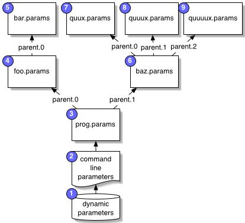

| ECJ |
In the second tutorial, we will build a generational GA for a problem requiring our individuals to be integer vectors. The tutorial will also delve into many specific aspects of ECJ, including how to use parameter files and parent parameters, the relationship between species and individuals, how to make custom breeding operators and pipelines, how to run with more than one thread of execution, how to base the seeds on the wall clock time, and how to print out parameter information.
If you've not done Tutorial 1, I suggest you do so.
Go into the ec/app directory and create a directory called tutorial2. In this directory, create a file called tutorial2.params. In this file, add as a first line the following:
parent.0 = ../../simple/simple.params
This specifies that ../../simple/simple.params will be the first parent of our parameter file. This means that if the parameter is not specified in tutorial.params, ECJ will next look in ../../simple/simple.params to find that parameter.
 As discussed in the introduction to Parameter files, ECJ has a particular way of looking up parameters. When a parameter is requested by the system, ECJ tries the following in order:
Most ECJ packages have parameter files which lay out some default parameters to help you get started, so you don't have to type them in yourself. The ../../simple/simple.params file in particular lays out common parameter settings. It lays out a lot of parameters which had to be explicitly specified in Tutorial 1, namely:
state = ec.simple.SimpleEvolutionState init = ec.simple.SimpleInitializer finish = ec.simple.SimpleFinisher exch = ec.simple.SimpleExchanger breed = ec.simple.SimpleBreeder eval = ec.simple.SimpleEvaluator stat = ec.simple.SimpleStatistics generations = 51 quit-on-run-complete = true pop = ec.Population pop.subpops = 1 pop.subpop.0 = ec.Subpopulation pop.subpop.0.size = 1024 stat.file $out.stat |
These parameters specify a standard generational evolution procedure, with a very basic statistics object, a single subpopulation of 1024 individuals, 51 generations, and a simple, one-objective Fitness. The statistics object writes out to the out.stat file, located in the directory where we issued our command (that's what the $ is for -- without it, it'd be located in the directory where the simple.params file was located).
Some of these parameters are inappropriate for a genetic algorithm: in the tutorial2.params file, we'll override two of them:
pop.subpop.0.size = 100
generations = 200
simple.params in turn relies on a parent of its own: ec.params, located in the ec directory. ec.params specifies the following default parameter settings for us, so we don't have to:
store = true flush = true evalthreads = 1 breedthreads = 1 seed.0 = 4357 gc = false gc-modulo = 1 aggressive = true checkpoint = false checkpoint-modulo = 1 checkpoint-prefix = ec |
You'll notice these are the same parameters that we typed in by hand in Tutorial 1. Now we don't have to. So what do we have to specify? Mostly, we have to specify the representation, problem domain, and breeding pipeline.
Our representation this time will be a vector of 20 integers. The integer values will be permitted to range from -12312 to 2341212 (why those values? Why not?). We begin by specifying the individual, an ec.vector.IntegerVectorIndividual.
pop.subpop.0.species = ec.vector.IntegerVectorSpecies
pop.subpop.0.species.ind = ec.vector.IntegerVectorIndividual
pop.subpop.0.species.fitness = ec.simple.SimpleFitness
IntegerVectorIndividuals, among others, use a special species called ec.vector.IntegerVectorSpecies. Species objects are set up in a one-to-many arrangement with Individuals: a subpopulation of Individuals will all share the same Species instance. The basic purpose of a Species object is to provide a place where you can store non-constant information that needs to be shared among all the Individuals in subpopulation. You'll see this many-to-one pattern in lots of other places.
Why not just store shared information as static member variables directly in IntegerVectorIndividual? Two reasons. First, static variables are very difficult to serialize, and that messes up ECJ's checkpointing. Second, this would tie storage to a given class name. Let's say you have two subpopulations, both with IntegerVectorIndividual, but one subpopulation consists of individuals whose genes range from -1 to 4 and the other subpopulation consists of individuals whose genes range from -10 to 10. If the global min and max values are stored as class variables in IntegerVectorIndividual, then you've got a problem. But if they're separately stored in shared Species instances, each group can have its own Species.
Why not just store shared information in the Subpopulation? After all, all the individuals belong to the same subpopulation, right? That's true, but only for that generation. Subpopulations are groups which are very similar in function to prototypes: Subpopulations can create new Subpopulations. We need a more permanent storage facility.
IntegerVectorSpecies is a subclass of ec.vector.VectorSpecies (which we used in Tutorial 1 for our BitVectorIndividuals). VectorSpecies is in turn a subclass of ec.Species. As stipulated in its documentation, IntegerVectorSpecies requires two parameters: min-gene and max-gene, which specify the minimum and maximum values the integers may take on. You can also specify them on a gene-by-gene basis, but we'll just do a default for all genes as:
# Note that min-gene and max-gene are defined in the SPECIES, not in the INDIVIDUAL
pop.subpop.0.species.min-gene = -12312
pop.subpop.0.species.max-gene = 2341212
VectorSpecies requires some parameters: the genome size, the chunk size (which specifies crossover boundaries -- usually it's just 1), the crossover type (if we do crossover), the mutation type (we'll pick "reset", which just randomizes the gene), and the probability that a gene will get mutated (if we do mutation). We enter them as follows:
pop.subpop.0.species.genome-size = 20
pop.subpop.0.species.crossover-type = two
pop.subpop.0.species.mutation-type = reset
pop.subpop.0.species.mutation-prob = 0.05
We don't need to specify the chunk size -- it'll by default be set to 1 for us. The parameters above say that the genome consists of 20 integers, we'll use two-point crossover (so crossover-prob doesn't really matter), and we'll mutate with a gene-independent probability of 0.05.
Besides ind, Species has parameters which specify the breeding pipeline. Let's do that next.
To introduce various new features, we'll design a preposterous breeding pipeline. The pipeline will pick two parents, one by fitness proportionate selection, and one through a tournament selection (of size 5) which always returns the worst individual in the tournament. These two parents will be crossed over (using two-point crossover as specified above), but only the child of the first parent will be used (the other will be thrown away). The child will then be mutated, with our specified gene-by-gene 0.05 probability, but the mutation procedure will flip the minus-sign of the integer, and that's all. Don't expect this to optimize very well! :-)
We begin at the end, by specifying a custom mutation class (which we'll make later):
# Use our own custom mutation class
pop.subpop.0.species.pipe = ec.app.tutorial2.OurMutatorPipeline
pop.subpop.0.species.pipe.source.0 = ec.vector.breed.VectorCrossoverPipeline
# Toss the second child
pop.subpop.0.species.pipe.source.0.toss = true
pop.subpop.0.species.pipe.source.0.source.0 = ec.select.FitProportionateSelection
pop.subpop.0.species.pipe.source.0.source.1 = ec.select.TournamentSelection
pop.subpop.0.species.pipe.source.0.source.1.size = 5
# Pick the worst individual in the tournament
pop.subpop.0.species.pipe.source.0.source.1.pick-worst = true
Now we have to write the mutation class. In the tutorial2 directory, create a file called OurMutatorPipeline.java. Add the following to the file:
package ec.app.tutorial2;
import ec.vector.*;
import ec.*;
import ec.util.*;
/*
* OurMutatorPipeline.java
*/
/**
OurMutatorPipeline is a BreedingPipeline which negates the sign of genes.
The individuals must be IntegerVectorIndividuals. Because we're lazy,
we'll use the individual's species' mutation-probability parameter to tell
us whether or not to mutate a given gene.
<p><b>Typical Number of Individuals Produced Per <tt>produce(...)</tt> call</b><br>
(however many its source produces)
<p><b>Number of Sources</b><br>
1
*/
public class OurMutatorPipeline extends BreedingPipeline
{
OurMutatorPipeline is a BreedingPipeline, which means it is a non-leaf node in the breeding pipeline tree, responsible not for selection of individuals but for modification of whatever is handed to it. BreedingPipelines are ec.Prototypes and so must define various methods, most of which have (empty) default implementations in BreedingPipeline for you, to make implementation easier for you.. The only Prototype method which is not explicitly handled is defaultBase(...), which specifies the default parameter dabase for OurMutatorPipeline. Since we have no parameters
that we're loading (we're stealing the mutation-probability parameter from elsewhere), there's no
need for a base, but we define a simple one anyway:
//used only for our default base
public static final String P_OURMUTATION = "our-mutation";
// We have to specify a default base, even though we never use it
public Parameter defaultBase() { return VectorDefaults.base().push(P_OURMUTATION); }
Next, BreedingPipeline stipulates that we have to state how many sources our breeding pipeline must have (it can be variable or a fixed number). In our case, we have just a single breeding source. We take all our individuals from that source and mutate them and return them.
public static final int NUM_SOURCES = 1;
// Return 1 -- we only use one source
public int numSources() { return NUM_SOURCES; }
Here's the main part of the class. We have to implement the produce(...) method, which fills an array with "bred" individuals and returns it. We get those individuals by asking our source for them, then mutating them as we please. The method looks like this:
// We're supposed to create a most _max_ and at least _min_ individuals,
// drawn from our source and mutated, and stick them into slots in inds[]
// starting with the slot inds[start]. Let's do this by telling our
// source to stick those individuals into inds[] and then mutating them
// right there. produce(...) returns the number of individuals actually put into inds[]
public int produce(final int min,
final int max,
final int start,
final int subpopulation,
final Individual[] inds,
final EvolutionState state,
final int thread) throws CloneNotSupportedException
{
The CloneNotSupportedException is there because in some situations produce(...) might use a clone(...) method call. In this example, we don't.
The easy way to mutate is to just ask our source to stick those individuals into inds[], and then mutate them. We also have to make sure that they're they're copies -- we don't want to stick original individuals from the previous population into the next one. This is a guarantee that all BreedingPipelines must make. We keep this guarantee by checking to see what our source is. If it's a BreedingPipeline too, it already copied the individuals for us (keeping it's guarantee). If it's a SelectionMethod, the individuals aren't copies but originals, so we need to copy them.
First we need to figure out how many individuals we'll produce. We can do this in two ways. First, we could compute how many individuals we want beforehand: for example, Crossover operations typicaly produce two individuals no matter what, unless they're forced to (say) produce a single individual. But since we're making a mutator, we'll take a different tack: we simply ask our sources to produce some number of individuals (their choice), then we mutate all those individuals and return them. In this case, we first produce the individuals, and the variable n is set to how many were created:
// grab individuals from our source and stick 'em right into inds.
// we'll modify them from there
int n = sources[0].produce(min,max,start,subpopulation,inds,state,thread);
Next we need to determine if we should bother mutating these individuals at all. With a certain probability we will just return the individuals unmutated:
// should we bother?
if (!state.random[thread].nextBoolean(likelihood))
// DON'T produce children from source -- we already did
return reproduce(n, start, subpopulation, inds, state, thread, false);
If we've gotten this far, it's time to actually mutate the individuals we got from our source. We'll first
copy them if the source isn't a BreedingPipeline.
Copying is done through the clone() method. This is a method in Individual which is guaranteed to creat
e a deep clone of the individual, including its Fitness. In some situations (such as crossing over GPIndividuals, w
here cloning the individual is very expensive) you may wish to light clone the Individual, then clone parts of it as
necessary. In that case you can judiciously use lightClone() instead. But that's not very common.
// clone the individuals if necessary -- if our source is a BreedingPipeline
// they've already been cloned, but if the source is a SelectionMethod, the
// individuals are actual individuals from the previous population
if (!(sources[0] instanceof BreedingPipeline))
for(int q=start;q<n+start;q++)
inds[q] = (Individual)(inds[q].clone());
Next we'll test to make certain that the individuals are in fact IntegerVectorIndividuals. It's a quick hack of a test, not a complete one, but usually the complete one is unnecessary. We'll also extract
the IntegerVectorSpecies object the individuals are sharing, so we can get the per-gene mutationProbability
value out of it.
// Check to make sure that the individuals are IntegerVectorIndividuals and
// grab their species. For efficiency's sake, we assume that all the
// individuals in inds[] are the same type of individual and that they all
// share the same common species -- this is a safe assumption because they're
// all breeding from the same subpopulation.
if (!(inds[start] instanceof IntegerVectorIndividual))
// uh oh, wrong kind of individual
state.output.fatal("OurMutatorPipeline didn't get an " +
"IntegerVectorIndividual. The offending individual is " +
"in subpopulation " + subpopulation + " and it's:" + inds[start]);
IntegerVectorSpecies species = (IntegerVectorSpecies)(inds[start].species);
Now we're ready to go through the individuals and mutate them. For each gene in each individual,
we'll flip a coin of per-gene mutationProbability, and change the sign of the gene if it comes up heads.
We set the flag in the individual indicating that its evaluation is invalid and needs to be reevaluated.
Finally, we'll return the number of individuals we created (n), and the class is done:
// mutate 'em!
for(int q=start;q<n+start;q++)
{
IntegerVectorIndividual i = (IntegerVectorIndividual)inds[q];
for(int x=0;x<i.genome.length;x++)
if (state.random[thread].nextBoolean(species.mutationProbability(x)))
i.genome[x] = -i.genome[x];
// it's a "new" individual, so it's no longer been evaluated
i.evaluated=false;
}
return n;
}
}
package ec.app.tutorial2;
import ec.*;
import ec.simple.*;
import ec.util.*;
import ec.vector.*;
public class AddSubtract extends Problem implements SimpleProblemForm
{
public void evaluate(final EvolutionState state,
final Individual ind,
final int subpopulation,
final int threadnum)
{
if (ind.evaluated) return;
if (!(ind instanceof IntegerVectorIndividual))
state.output.fatal("Whoa! It's not a IntegerVectorIndividual!!!",null);
IntegerVectorIndividual ind2 = (IntegerVectorIndividual)ind;
Now we add/subtract genes to get our fitness:
int rawfitness = 0;
for(int x=0; x<ind2.genome.length; x++)
if (x % 2 == 0) rawfitness += ind2.genome[x];
else rawfitness -= ind2.genome[x];
I have no idea what the ideal fitness here is. Plus with our odd mutation operator, it's unlikely we'll get it. So let's bypass the issue and just state that individuals are NEVER ideal -- even if they are.
We finish out with:
// We finish by taking the ABS of rawfitness as mentioned. By the way,
// in SimpleFitness, fitness values must be set up so that 0 is <= the worst
// fitness and +infinity is >= the ideal possible fitness. Our raw fitness
// value here satisfies this.
if (rawfitness < 0) rawfitness = -rawfitness;
if (!(ind2.fitness instanceof SimpleFitness))
state.output.fatal("Whoa! It's not a SimpleFitness!!!",null);
((SimpleFitness)ind2.fitness).setFitness(state,
// what the heck, lets normalize the fitness for genome length
((double)rawfitness)/ind2.genome.length,
//... is the individual ideal? Indicate here...
false);
ind2.evaluated = true;
}
}
Save the file, and compile both Java files in the tutorial2 directory. Add the following parameters to the tutorial2.params file to specify that we're using AddSubtract as our Problem:
eval.problem = ec.app.tutorial2.AddSubtract
Run the problem by going into the tutorial2 directly and typing the command (at least on a UNIX box):
java ec.Evolve -file tutorial2.params
Because Java no longer guarantees exact floating point results, the final result may vary from platform to platform, but as far as I am aware, the only JVM which gives different results from the others is Microsoft's older JVM. On a non-Microsoft JVM the last few lines of the out.stat file says
Best Individual of Run:
Evaluated: true
Fitness: 1430113.9
1777241 -955954 760157 -1180365 2011420 -2018763 1458181 491644 521531 -1835900
819498 -2134796 1707889 -1326509 2324432 -1148173 1809439 -2129740 2031426 -1142507
Now, let's run this with two simulataneous threads. This would be useful in particular if you have a multiprocessor computer. You can multithread the evaluation process, the breeding process, or both. Let's do both. When you have more than one thread, you need to have more than one seed. We have only specified one seed (seed.0=4357). So we'll need to specify a second one. We'll add the parameters on the command line, though of course you could add them to your parameter file:
java ec.Evolve -file tutorial2.params -p breedthreads=2 -p evalthreads=2 -p seed.1=1234
With two threads, the second one starting with seed 1234, we now get the following best individual:
Best Individual of Run:
Evaluated: true
Fitness: 1134800.9
-2144673 -1202304 -529156 1934348 -2266614 1518874 -523776 1940636 -1432431 -537864
-982131 195106 -2023895 1775415 -198611 1216088 -2125361 1065844 -1420719 1142507
Even though the process is multithreaded, it's been arranged so that the results will be the same across runs with the same initial seeds. Try running it again and see for yourself.
ECJ, under most conditions, is guaranteed deterministic. That means that every time ECJ is run, you'll get the same results for the same parameter settings and seeds. Perhaps you'd like ECJ to differ each time you run it. The good way to do this is to set an explicit new seed each run. But you can also just tell ECJ to base the seeds on the current timer. For example, we could set both seeds to timer values and run multithreaded like this:
java ec.Evolve -file tutorial2.params -p breedthreads=2 -p evalthreads=2 -p seed.1=time -p seed.0=time
Notice that the seeds wind up being different from each other, even though both are based on the current number of milliseconds. One last thing. If you add the parameter print-params=true, as ECJ requests parameters from the database, the database will print out the parameters and their values. This helps you see what parameters are actually being used For example, if you issue the following:
java ec.Evolve -file tutorial2.params -p print-params=true
You are likely to get the following back:
P: store = true
P: flush = true
P: breedthreads = 1
P: evalthreads = 1
P: seed.0 = 4357
P: seed.0 = 4357
P: state = ec.simple.SimpleEvolutionState
| ECJ
| An evolutionary computation system (version 8)
| Copyright 2001 by Sean Luke
| URL: http://www.cs.umd.edu/projects/plus/ec/ecj/
| Mail: sean@cs.gmu.edu
| Date: June 20, 2001
| Current Java: 1.3.1 / Java HotSpot(TM) Client VM-1.3.1
| Suggested Java: 1.2.2
| Minimum Java: 1.1
Threads: breed/1 eval/1
Seed: 4357
Setting up
P: checkpoint = false
P: checkpoint-prefix = ec
P: checkpoint-modulo = 1
P: gc-modulo = 1
P: generations = 200
P: gc = false
P: aggressive = true
P: quit-on-run-complete = true
P: init = ec.simple.SimpleInitializer
P: finish = ec.simple.SimpleFinisher
P: breed = ec.simple.SimpleBreeder
P: pop.subpops = 1
P: eval = ec.simple.SimpleEvaluator
P: eval.problem = ec.app.tutorial2.AddSubtract
P: stat = ec.simple.SimpleStatistics
P: stat.file = $out.stat
P: exch = ec.simple.SimpleExchanger
Initializing Generation 0
P: pop = ec.Population
P: pop.subpops = 1
P: pop.subpop.0 = ec.Subpopulation
P: pop.subpop.0.species = ec.vector.IntegerVectorSpecies
P: pop.subpop.0.species.genome-size = 20
P: pop.subpop.0.species.mutation-prob = 0.05
P: pop.subpop.0.species.crossover-type = two
P: pop.subpop.0.species.pipe = ec.app.tutorial2.OurMutatorPipeline
P: pop.subpop.0.species.pipe.source.0 = ec.vector.breed.VectorCrossoverPipeline
P: pop.subpop.0.species.pipe.source.0 = ec.vector.breed.VectorCrossoverPipeline
P: pop.subpop.0.species.pipe.source.0.source.0 = ec.select.FitProportionateSelection
P: pop.subpop.0.species.pipe.source.0.source.0 = ec.select.FitProportionateSelection
P: pop.subpop.0.species.pipe.source.0.source.1 = ec.select.TournamentSelection
P: pop.subpop.0.species.pipe.source.0.source.1 = ec.select.TournamentSelection
P: pop.subpop.0.species.pipe.source.0.source.1.size = 5
P: pop.subpop.0.species.pipe.source.0.source.1.pick-worst = true
P: pop.subpop.0.species.pipe.source.0.toss = true
P: pop.subpop.0.species.ind = ec.vector.IntegerVectorIndividual
P: pop.subpop.0.species.min-gene = -12312
P: pop.subpop.0.species.max-gene = 2341212
P: pop.subpop.0.species.fitness = ec.simple.SimpleFitness
P: pop.subpop.0.size = 100
P: pop.subpop.0.duplicate-retries = 0
Generation 1
Generation 2
Generation 3
Generation 4
Generation 5
...
Notice that some parameters are requested more than once. There are other ways of printing out parameters as well -- see the ec.Evolve parameter listings for more ways to do this.